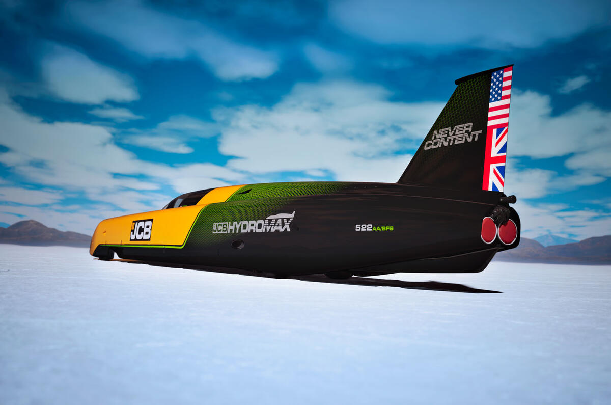

UK firm sets new world land speed record with hydrogen-powered car
2026, September 10

UK firm sets new world land speed record with hydrogen-powered car
2026, September 10
United States
This is a genuinely impressive engineering achievement — and there’s an interesting twist: it isn't an electric car at all.🚀 JCB Hydromax: 406.320 mph
UK construction-equipment manufacturer JCB has set a new FIA world land-speed record for a hydrogen internal-combustion vehicle with its JCB Hydromax.
At the Bonneville Salt Flats in Utah, the car achieved:
406.320 mph (653.909 km/h) average
First run: 400.623 mph
Second run: 412.135 mph
Two-way average required by FIA rules
Previous hydrogen internal-combustion record: 185.5 mph
Previous hydrogen fuel-cell record: 303 mph
So JCB didn't merely beat the previous hydrogen combustion record — it more than doubled it.
🔥 It burns hydrogen like a conventional engine
This is the really interesting part.
The Hydromax uses two hydrogen-fuelled internal-combustion engines, rather than a hydrogen fuel cell driving an electric motor. The engines were developed from JCB's production hydrogen engines used in construction equipment.
For the record attempt, each engine was uprated to around 800 hp, giving roughly 1,600 hp combined. Ricardo helped JCB increase the production engine from 74 hp to 800 hp while reducing its weight by about 100 kg.
Hydrogen is injected/mixed with air and combusted just as fuel would be in a conventional engine.
The principal combustion product is water, although the claim that this means zero emissions needs a little qualification: hydrogen combustion can still produce nitrogen oxides (NOx) because the engine burns hydrogen in air.
🏎️ The car itself is enormous
The Hydromax is about 32 feet (9.75 m) long and uses a twin-engine layout.
Behind the wheel was Andy Green, the retired RAF Wing Commander who is probably the most appropriate driver JCB could have chosen.
Green drove JCB's Dieselmax to 350.092 mph (563.418 km/h) at Bonneville in 2006. More famously, he drove ThrustSSC to 763.035 mph in 1997 — becoming the first person to officially break the sound barrier on land.
So, somewhat unusually, the same driver now holds the records for:
diesel → hydrogen → outright land-speed record.
🌱 Why JCB did this
The record isn't really about building a hydrogen supercar.
JCB is trying to demonstrate that hydrogen combustion could work for heavy machinery, where replacing diesel engines with batteries can be difficult because of the enormous energy requirements and weight involved.
That's why this project matters more than the headline suggests.
A 9.75-metre, 1,600-hp streamliner travelling at 406 mph isn't something we're going to see on the motorway. 😄
But if the same basic combustion technology can be scaled for excavators, tractors and other heavy equipment, hydrogen could potentially provide a way of retaining familiar engines and rapid refuelling while eliminating carbon dioxide from the fuel itself. JCB says the project forms part of its wider investment in hydrogen technology.
⚠️ There's an important catch
Hydrogen isn't automatically "green."
If the hydrogen is produced using fossil fuels, substantial CO₂ emissions can occur before the hydrogen ever reaches the vehicle. The environmental benefit is much greater when the hydrogen is produced using renewable electricity — so-called green hydrogen.
So the record demonstrates something very specific:
Hydrogen can power an internal-combustion engine to extraordinary performance.
It doesn't, by itself, prove that hydrogen is the cheapest, cleanest or most practical replacement for diesel.
Still, 406 mph from a hydrogen combustion engine is one heck of a proof of concept.